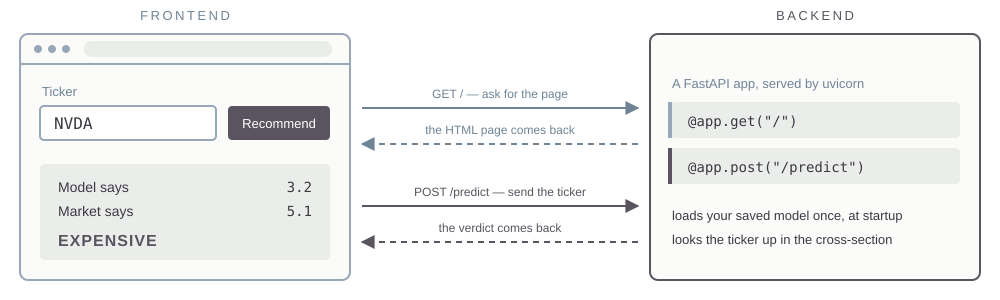
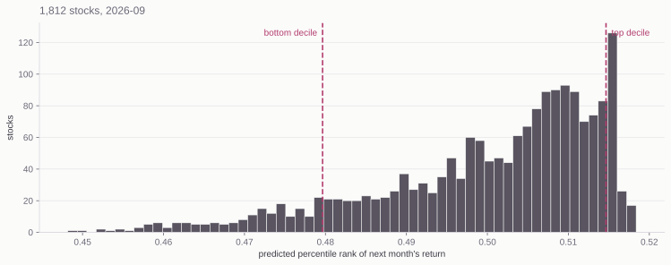

Tue Sep 15, 2026
momentum |
11-month return, skipping the most recent month |
ret_1m |
last month’s return |
volatility |
volatility of daily returns within the month |
volatility_12m |
volatility of the last 12 monthly returns |
illiquidity |
Amihud: average absolute return per dollar traded |
dollarvol |
average daily dollar volume |
Momentum skips month t–1 because stocks tend to reverse at a one-month horizon. That month is carried separately as ret_1m.
marketcap |
market capitalization |
pb |
price to book |
ps |
price to sales |
roe |
return on equity |
grossprofitability |
gross profit over assets |
accruals |
the part of earnings not backed by cash flow |
assetgrowth |
change in assets since the last annual filing |
issuance |
log change in shares outstanding |
divyield |
dividend yield |
session7_model.joblib.Industry is not a feature: an earlier fit with sector dummies picked up the sector returns of the training years.
The 240 training months are cut into six blocks of 40. Each fold trains on the blocks before it and is scored on the one that follows.
block 1 2 3 4 5 6
fold 1 train valid
fold 2 train train valid
fold 3 train train train valid
fold 4 train train train train valid
fold 5 train train train train train validSix blocks give five folds. The folds are whole months and always run forward — shuffling the rows would train the model on 2018 to predict 2006.
session7_test.parquet contains the 15 features ranked within each cross section 2001-01 through 2026-09session7_model.joblib to each cross-section gives predictions (of ranks)session7_model_full.joblibsession7_live.parquetFrontend
The browser. HTML, CSS, and JavaScript — it draws the page and collects the clicks.
Backend
A program on a server that listens continuously for requests. Yours will be Python.
You open a URL. The browser sends a GET request. The server sends back the HTML, CSS, and JavaScript it was written to send. The browser interprets that and shows you a page.
Right-click any web page and choose View Page Source. That is the frontend code, exactly as the backend handed it over.
A POST request carries data the other way — a form, a ticker you typed. The server does what it was written to do and replies.

The backend and the frontend can be the same computer — lab638, or your own laptop if you have Python installed on it.
localhost
127.0.0.1 is the loopback address. The browser asks the machine it is already running on, and the request never reaches a network.
Ports
One machine can run many programs listening at once. The port number tells the operating system which of them gets the request.
You write the app as a .py file. FastAPI is the dominant Python library for writing one; uvicorn runs it and starts it listening on a port: python3 -m uvicorn app:app --reload.
session7_model_full.joblib is baked into the app (rebuild the app when the model is refitted)session7_live.parquet into the app
Every prediction sits between 0.448 and 0.518. Adjacent decile cutoffs in the middle are four thousandths apart.
Argue these out with AI before you ask it to write code.
You hand a host your repository. It builds the app, runs it, and puts it behind a public URL — there is no server for you to administer. Railway, Render, Koyeb, and Heroku all do this. We will use Koyeb, which has a free tier.
koyeb.com..env file:>> appends, and creates the file if you do not have one. Koyeb’s web UI will link a GitHub repo with no token at all — the token is what lets AI do the deploying for you, which is the path we are taking.
Prompt
My goal is to push this app to GitHub as a new public repo and then create a Koyeb service connected to that repo. Walk me through it one step at a time.
On day one you told git to ignore parquet files. The host builds only what is in the repo, so the model file and the data the app reads have to get there. And nothing from .env belongs in a public repo — secrets go in Koyeb’s environment settings.
Optional. The Koyeb URL works fine on its own.
dnsimple.com and buy a domain name..env:Prompt
I bought mydomain.com at DNSimple and my app is running on Koyeb. Use the DNSimple API v2 with DNSIMPLE_ACCESS_TOKEN to create the record Koyeb needs, and tell me what to configure on the Koyeb side.
MGMT 638 · Gen AI and Quantitative Investments